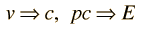

Usefulness of the Quantity pc
The relativistic energy expression for a particle is:
which reduces to E = pc for photons . The quantity pc is proportional to the relativistic momentum but has energy units, and it is useful in many high energy calculations. Using
and
an expression for pc in terms of the relativistic kinetic energy can be obtained:
| Application to pion decay |
For most ordinary processes the kinetic energy is much less than the rest mass energy, so the first term can usually be neglected. This leads to the useful approximation:
For electron energies less than 20 keV and proton energies less than 38 MeV this expression has an error less than 1%.
| For extreme relativistic velocities where |  | then |  |
For less than 1% error this requires electron energies over 3.2 MeV and proton energies over 5.8 GeV.
A useful application of the quantity pc is in the calculation of the velocity as a fraction of c.
 | and as |  |
with the limiting case applying for the momentum of photon.
| Calculation of DeBroglie wavelength |
| HyperPhysics***** Quantum Physics | R Nave |